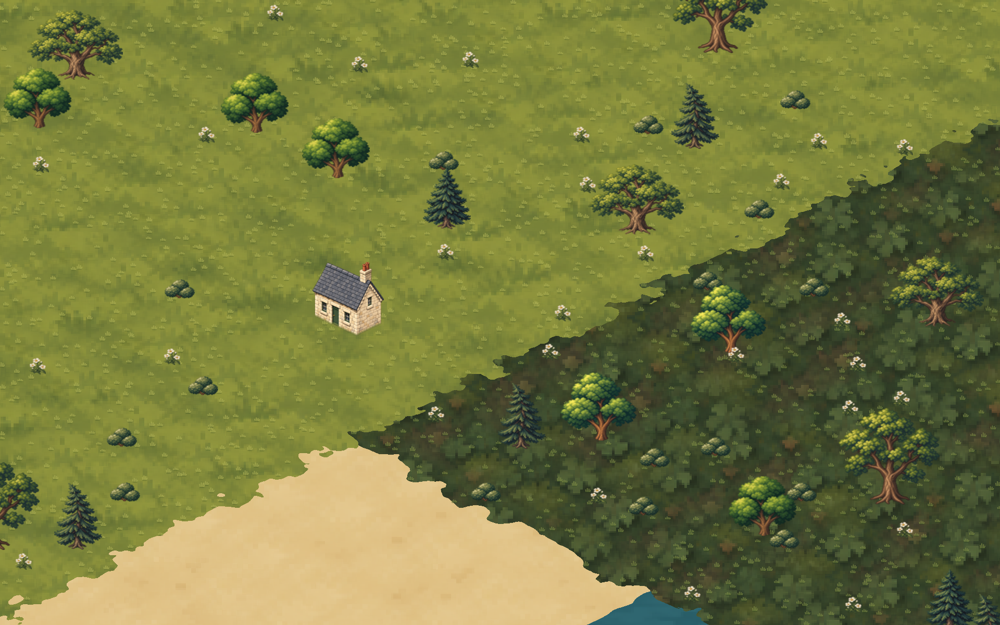
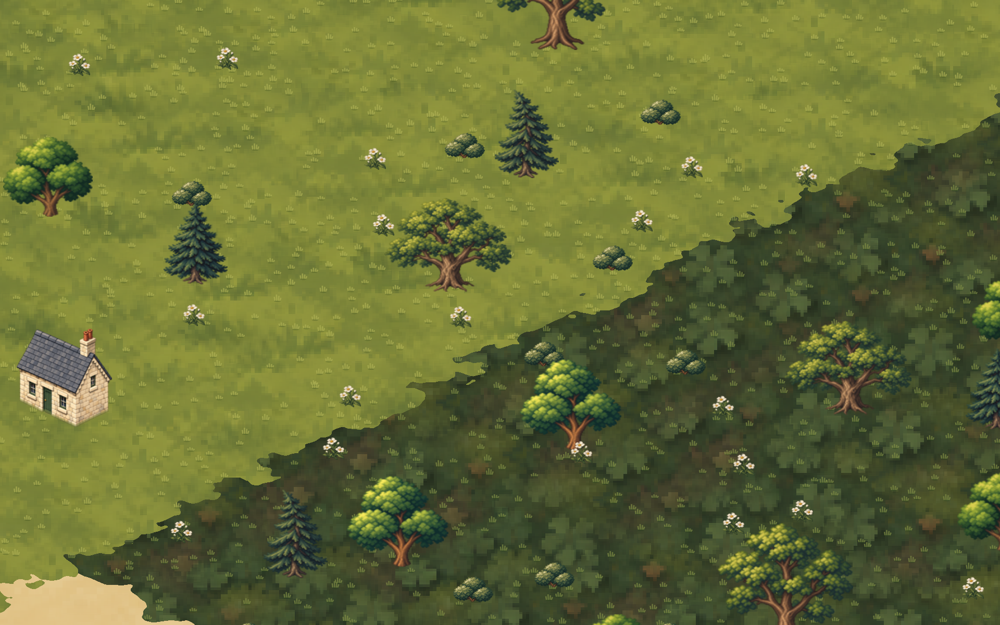
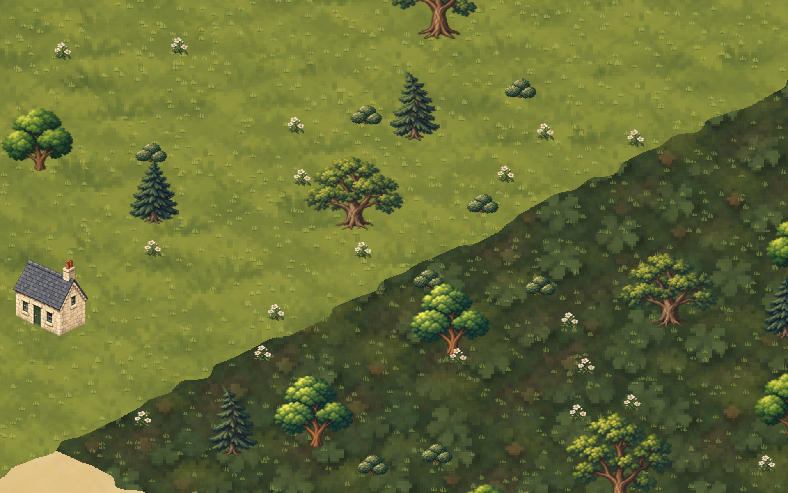
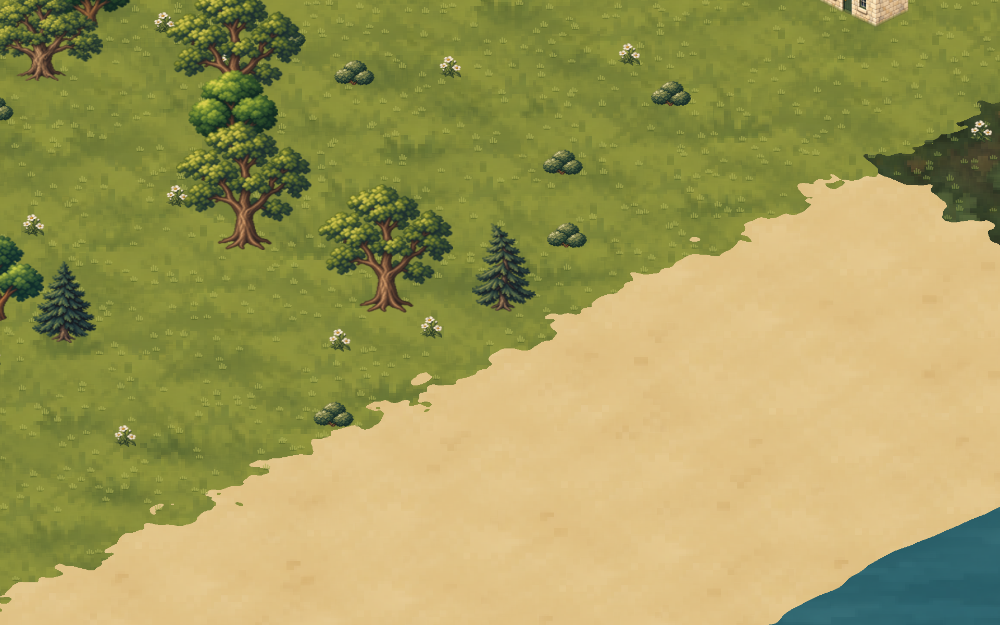
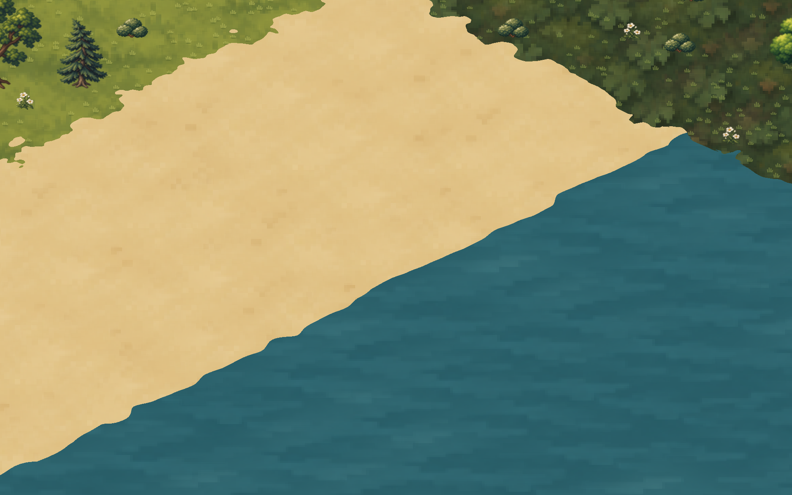
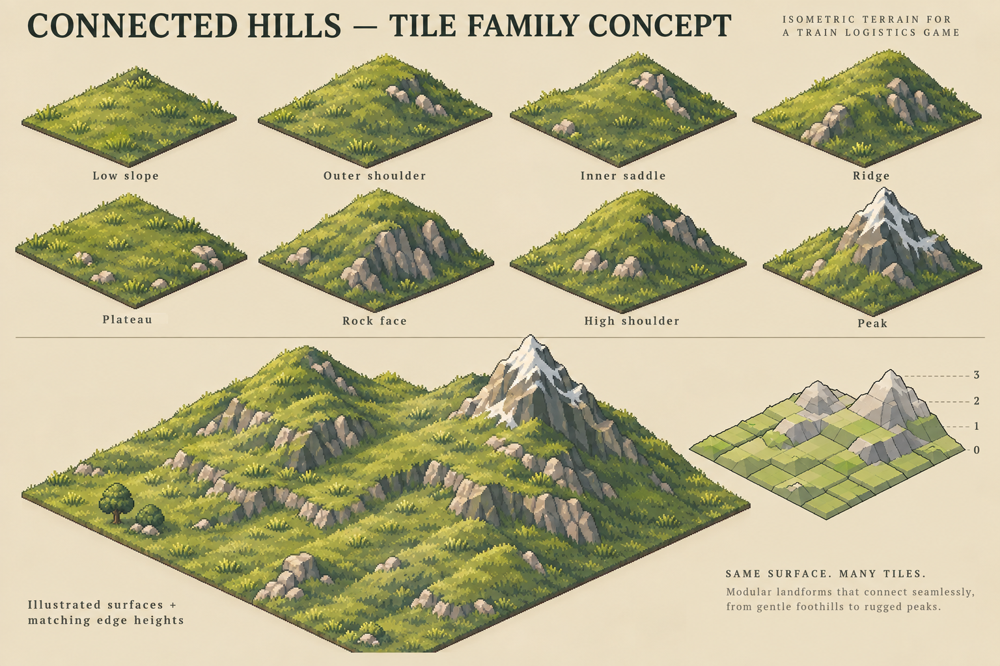
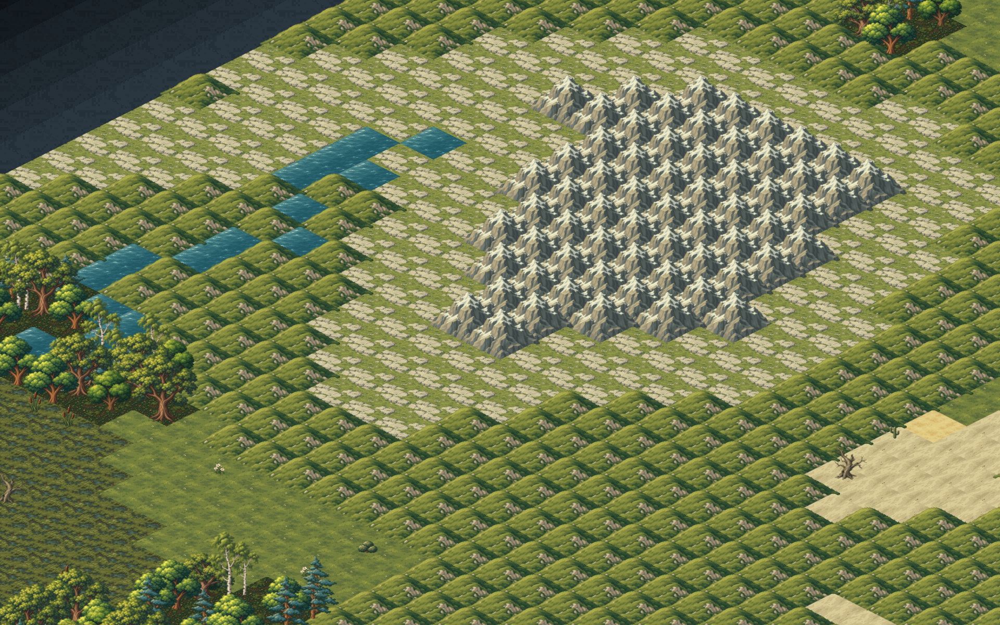
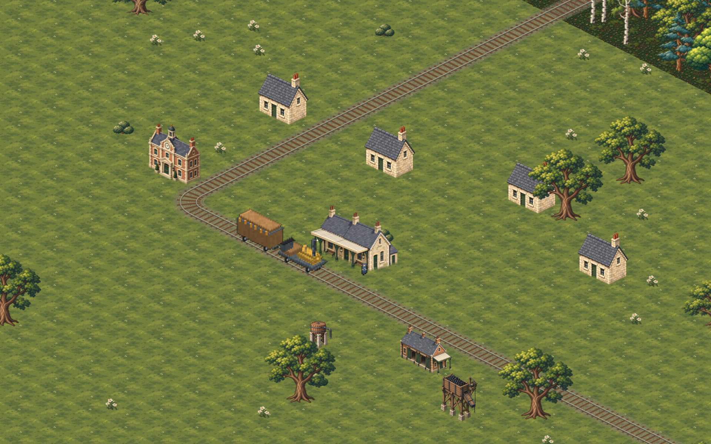
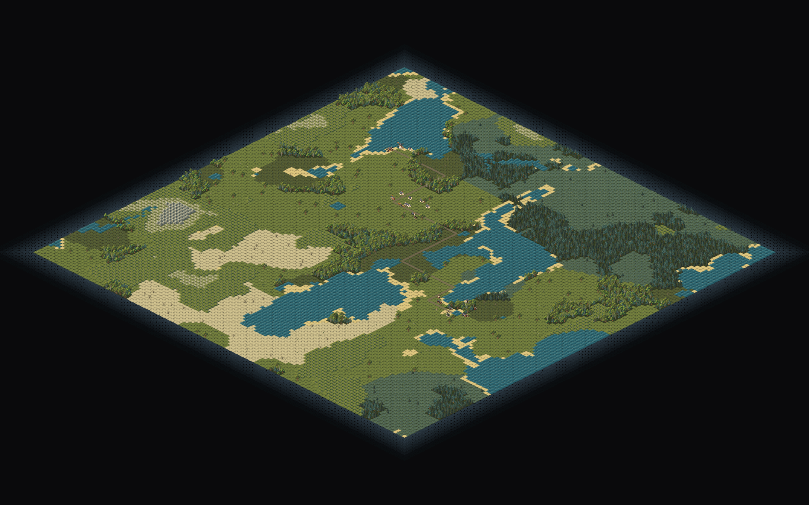

The illustrated terrain and original hill sprites are restored in the game. These comparisons explore how to retain their texture while reducing repetition. The trees, flowers, bushes and cottage stay identical between the detail options.
The texture alternatives are actual Game/Pixi screenshots with a preview ground layer on a controlled 48×48 map. The generated hill board is a separate concept. Neither proposal has replaced the restored production terrain.
Recommendation: balanced. Readable grass clusters with quieter gaps for flowers and bushes. Light is calmer; rich gives the meadow more emphasis. These are art comparisons, not camera LOD settings.

| Surface | Detail | What should carry it |
|---|---|---|
| Grass | Medium | Visible tufts, small colour variation, quiet gaps. |
| Forest floor | Medium-high | Leaf litter, roots and grass islands; less contrast than the trees. |
| Sand / desert | Low | Fine grains and occasional stones; avoid repeated dune stamps. |
| Water | Low-medium | Sparse ripples and an irregular, narrow shoreline. |
| Taiga / swamp | Medium | Short cool grass / damp islands; trees and reeds supply height. |
| Rock | High locally | Facets and cracks concentrated in outcrops. |
| Hills / mountains | Medium grass, high rock | Slopes, ridge silhouettes and exposed rock express elevation. |
The percentages control source-texture contribution, not ground coverage. Native vegetation is unchanged.
Use small irregular patches to decide where each material ends. The source texture remains visible right up to the boundary. These two forest views share the exact same camera and vegetation.




This is a direction study. Material joins still have strong contrast; final transition art needs its own edge clusters and shoreline treatment. Terrain generation and build rules are unchanged.
Keep the original illustrated grass and rock. Add ramps, shoulders, saddles, ridges and plateaus that meet at shared heights. Put peak caps only at local summits, so a dense hill region becomes one raised landmass.

| Piece | Purpose |
|---|---|
| Low slope + shoulder | Rise gently from the surrounding meadow. |
| Inner saddle + ridge | Join neighbouring hills across more than one tile. |
| Plateau + rock face | Give the interior real elevation and expose steep sides. |
| High shoulder + peak | Finish only the summits, rather than every mountain tile. |
Proposed rule: adjacent tiles share their two edge-corner heights. Start with 10-pixel elevation steps and four levels. Surface variants change grass and rock placement while the joining edges remain fixed. Rail slopes and save data need a separate implementation before elevated terrain becomes gameplay.
Normal 128×128 generation, seed 7412, with the production illustrated atlas. These show the rollback as it currently renders, including the repeated hill stamps that the proposed tile family would replace.



11 game renders · 1 generated concept · 164 tests pass · typecheck, lint and production build
pass.
Browser checks verify native ground, fractional elevation anchors and rail
flattening. Comparison report ·
World report